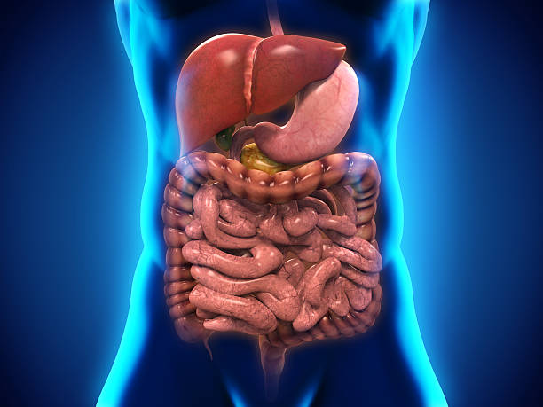
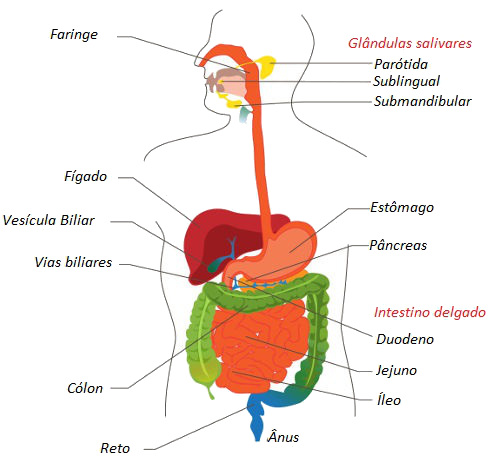

Sistema Digestório
É responsável por obter dos alimentos que comemos os nutrientes para funções do organismo

Índice
Introdução
Componentes
Boca
Faringe
Esôfago
Estômago
Intestino
Glândulas
Pâncreas
Observações
Introdução

O sistema digestório é responsável pela captação, digestão e absorção dos alimentos necessários a manutenção dos processos vitais. Consiste de um tubo longo, muito irregular, apresentando porções mais dilatadas e outras estreitadas, com glândulas anexas que liberam os produtos de secreção no seu interior. Apresenta aberturas nas duas extremidades, a superior é a rima bucal (entrada dos alimentos) e a inferior é o ânus (eliminação de detritos).
Para o aproveitamento das substâncias alimentares, o sistema digestório tem que processar diversos atos que consistem na mastigação, deglutição, ingestão, digestão, absorção e finalmente armazenamento e eliminação de detritos, através dos órgãos que o compõem.
Boca
Possui função de mastigação, deglutição, gustação e fonação, apresenta os lábios, as bochechas, palato duro e mole, soalho da boca, língua, gengiva, dentes, glândulas salivares maiores e menores. Quanto aos dentes há duas dentições: decídua (20 dentes) que é trocada por volta dos 6 aos 11 anos e permanente (32 dentes). Na permanente, há 04 incisivos (cortam os alimentos), 02 caninos (dilacerar os alimentos), 04 pré-molares e 06 molares (trituram os alimentos).
Faringe
É um tubo musculoso, situado a diante da coluna vertebral e por trás da cavidade nasal, da cavidade oral e laringe. Serve de passagem do ar da cavidade nasal para a laringe e do alimento da boca para o esôfago.
Esôfago
É um tubo muscular que se estende da faringe até o estômago. Atravessa o músculo diafragma.
Estomago
É a maior dilatação do sistema digestório, tem a função digestiva e armazenamento do alimento até se processar a digestão. O estômago recebe o bolo alimentar e o transforma em uma pasta chamada quimo. O estômago possui duas curvaturas, a pequena curvatura que é mais para a direita e é côncava, e a grande curvatura que fica mais para a esquerda e é convexa. Também possuem estruturas especializadas que impedem o retorno do alimento do estômago para a boca ou do intestino para o estômago. Além de que possuem pregas em seu interior para aumentar a superfície de contato com o alimento, favorecendo a digestão.
Intestinos
Temos dois tipos de instestinos no sistema digestório
Intestino Delgado
Tem um comprimento aproximado de 5 a 6m. Está dividido em: duodeno (responsável pela digestão), jejuno e íleo (responsáveis pela absorção dos nutrientes). E apresenta as seguintes funções: dar continuidade à digestão dos alimentos e absorção dos nutrientes.
- O duodeno: Têm aproximadamente 25 cm de comprimento, em forma de um C.
- O jejuno e o íleo: Apresentam as seguintes medições: os 2/5 representam o jejuno, e os 3/5 de alças representam o íleo.
Intestino Grosso
Ocorre a absorção de água e dos sais minerais, tem o comprimento aproximado de 1,5m, é mais calibroso que o intestino delgado. Sua parte inicial, chamada ceco e nesta região encontra-se o apêndice vermiforme que é uma pequena extensão tubular terminada em fundo cego. As demais porções são o cólon ascendente, cólon transverso, cólon descendente, cólon sigmóide e reto, na porção final o orifício anal.
Glândulas Salivares
Glândulas salivares presentes na boca, são divididas em glândulas salivares maiores e menores. São responsáveis pela produção e liberação de saliva, que serve para umedecer os alimentos e ajudar na sua trituração.
Fígado
dentre muitas de suas funções, produz a bile, a qual tem a função de emulsionar as gorduras. O fígado apresenta uma face parietal, voltada para a parede anterior do abdômen e para o diafragma; e uma face visceral, voltada para as vísceras. Nesta última face, identificamos anatomicamente quatro lobos: direito, esquerdo, quadrado e caudado. Na face visceral encontra-se a vesícula biliar cuja função é armazenar a bile. A cirrose ocorre devido a uma inflamação crônica do fígado.
Pâncreas
Produz o suco pancreático. O pâncreas apresenta 3 divisões: cabeça (encaixada no duodeno), corpo e cauda (próximo ao baço).
Observações
A Apendicite é uma inflamação no apêndice vermiforme, é muito dolorosa e, se não for tratada, pode levar a uma infecção muitas vezes fatal. O "tratamento" tradicional é a remoção cirúrgica.